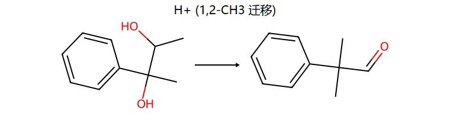
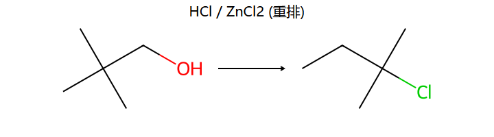
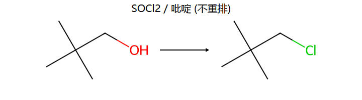
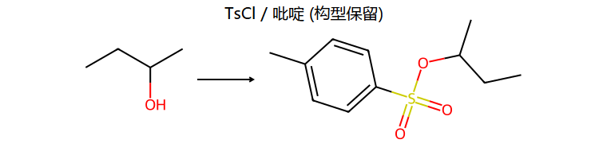
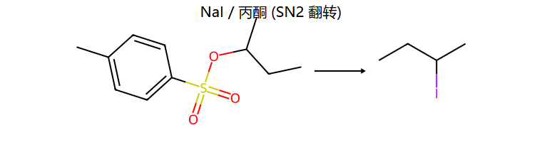

你 5/21 一天集中刷了 9 篇有机问答，全部围绕醇 + 碳正离子。系统已三次给你弹"重复弱点预警"。回顾里 频哪醇重排被标 ⚠️ 整整 4 次（5/21·5/24·5/27 + 未掌握清单）——这是你有机最持久的卡点，恰好是作战手册的 ★重点攻。守 90+ 的关键不在多刷，在把下面 3 个反复卡的机理题彻底默写通。
来源：11 篇 AI 真实问答（2026-05-12 ~ 05-21）+ 学习回顾掌握度标记（05-14~05-27）｜ 数据源 课程/有机化学/薄弱点精析.md（已二次独立验证）｜ 考期 6/29 10:30 下院113。
| 知识点 | 掌握度 | 权重 | 优先级 | 针对动作 |
|---|---|---|---|---|
| 频哪醇重排 / anti-periplanar | ⚠️(4次) | 重点攻★ | 🔴最高 | 画 (13)(14) 两椅式构象，标 axial 基团，默写两产物 |
| 碳正离子重排(新戊醇) | ⚠️(重复问) | 重点攻★ | 🔴最高 | 分步默写 4 步机理 + 追踪碳编号；记 HX 重排 vs SOCl₂/PBr₃ 不重排 |
| Lucas 快慢 / 碳正离子稳定性 | ⚠️(重复问) | 重点攻 | 🟠高 | 练含烯丙位/远端双键排序；牢记"双键须紧贴 OH" |
| 醇→卤代物两步法 + SN2 Walden | 🔶(重复问) | 重点攻 | 🟠高 | 默写 OH→OTs→I，标构型翻转 |
| Oppenauer 氧化六元环 TS | ⚠️ | 重点攻(机理) | 🟠高 | 画醇铝中间体→六元环→产物，标 H⁻ 箭头；对比 MPV |
| 羟醛缩合 稀碱/浓碱差异 | ⚠️(常考) | 重点攻(ch11) | 🟠高 | 默写两条件两产物 + 机理（见 ch11） |
| 醛酮/羧酸衍生物/胺(ch11+) | ⚠️(缺口) | 必拿+重点攻 | 🟡中 | 过一遍鉴别 + 合成法（丙二酸酯/乙酰乙酸酯） |
| SN1/SN2 溶剂效应 + 立体 | ✅ | 重点攻 | 🟢低 | 确认 SN1 消旋/SN2 翻转结论即可 |
| Claisen / 格氏保护 / 酚甲基化 | ✅ | 必拿 | 🟢低 | 已透，不重复 |
你的真实困惑
(13)(14)"画出来一模一样"的 1,2-二甲基-1,2-环己二醇，为什么一个缩环（6→5，1-乙酰基-1-甲基环戊烷）、一个甲基迁移（2,2-二甲基环己酮）？后续 5/24、5/27 又两次回到"反式共平面规则"卡住。
正确思路（三步默写法）
易错提醒
怎么破 → 针对动作
遮住答案，亲手画 (13)(14) 两张椅式构象，标出 axial 基团，各默写一个产物；再判顺反二醇能否重排。完整图解见 ch10 · 10.6③ →
顺带看真题级对照（不对称带苯基版）：A 卷三-8 底物是 2-苯基-2,3-丁二醇，重排产物是醛 Ph–C(CH₃)₂–CHO（不是酮）；同底物 + HIO₄ 则断成苯乙酮 + 乙醛。

你的真实困惑
新戊醇 (CH₃)₃C–CH₂OH + HCl-ZnCl₂ 为什么产物碳骨架变成带乙基的 2-氯-2-甲基丁烷？同一题你两周内问了 2 次（两篇 AI 笔记都带"第 2 次问新戊醇重排"预警），5/21 回顾仍标 ⚠️需巩固、进未掌握清单。

正确思路
走 SN1 → 脱水生成极不稳定的一级碳正离子 (CH₃)₃C–CH₂⁺ → 旁边叔碳上一个 CH₃ 带电子对 1,2-迁移 → 变成稳定的三级碳正离子 → Cl⁻ 捕获。判别套路：HCl-ZnCl₂ / 浓 H₂SO₄ / 醇脱水加热 + 产物骨架对不上反应物 = 一定重排。
易错提醒

怎么破 → 针对动作
分步默写这 4 步机理 + 追踪碳编号一遍；把"HX 重排 vs SOCl₂/PBr₃ 不重排"这对写进速查。详见 ch10 · 10.6① →
你的真实困惑
(a) Lucas 三个醇排序——A(烯丙醇)、B(双键远端伯醇)、C(2-丁醇)，为什么 A、B 都有双键差别这么大？（系统标"第 2 次问醇活性与碳正离子重排"）；(b) C₂H₅–CHD–OH 经 TsCl/吡啶→NaI/丙酮 看不懂，同一题问了 2 次。
正确思路


易错提醒
怎么破 → 针对动作
练含烯丙位/远端双键的排序题；默写 OH→OTs→I 并标出构型翻转。详见 ch10 · 10.3① → 和 10.3③ →
你的真实困惑
4-甲基-3-戊烯-2-醇在 Al(OtBu)₃/丙酮/Δ 下只氧化 OH 不动 C=C，"之前看的版本没看懂"，不理解 H 怎么搬、Al 干嘛、为什么不破坏双键。
正确思路
抽象成"A 醇 + B 酮 ⇌ A 酮 + B 醇"的 H 交换。机理 = 六元环过渡态协同的 H⁻ 转移（无碳正离子、无自由基 → 不重排、不碰 C=C）。用 Al(OtBu)₃ 而非 Al(OⁱPr)₃，因为 t-BuO⁻ 无 α-H，防止逆向 MPV 还原，平衡只朝氧化走；过量丙酮 + 加热推平衡。
易错提醒
怎么破 → 针对动作
画醇铝中间体 → 六元环 → 产物，标 H⁻ 箭头；和反向的 MPV 还原对照。机理速记见 ch10 · 10.3⑥ →
你的三类重排已问透 1 类（Claisen ✅）、卡住 2 类（频哪醇 ⚠️×4、Wagner-Meerwein ⚠️×重复问）。
| 重排 | 触发 | 迁移到哪 | 关键判据 |
|---|---|---|---|
| Wagner-Meerwein | HX/ZnCl₂、浓 H₂SO₄、脱水 | 1,2-迁移到正电中心 | 迁完级数升高（H>烷基>CH₃） |
| 频哪醇(Pinacol) | 邻二醇 + H⁺ | 1,2-迁移到正电中心 | 必 anti-periplanar；环状画椅式 |
| Claisen | 烯丙基芳基醚 + Δ | [3,3]-σ 跨过 O 到邻位 | 六元环过渡态，只加热 |
数据源：课程/有机化学/薄弱点精析.md（基于 11 篇真实问答 + 学习回顾，已二次独立验证）｜ 配套真题见 真题题型全库 ｜ AI 辅助整理 + RDKit 结构图